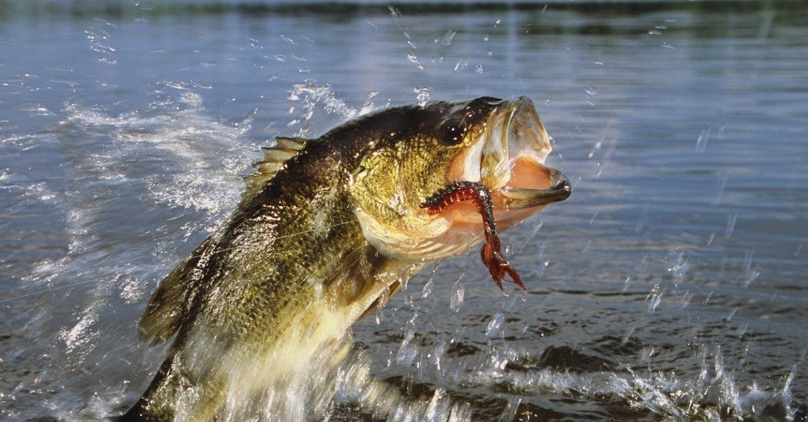

Fishing
What is fishing?
Fishing is the activity of catching fish, typically from bodies of water such as lakes, rivers, or oceans, using tools like rods, nets, or traps. It can be done for food, recreation, or commercial purposes and has cultural, economic, and ecological significance around the world.
On this website, you will find a basic level of information detailing a few of the most important parts of the activity of fishing. Click on the 'Next' button to learn about the equipment used for fishing.